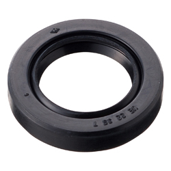
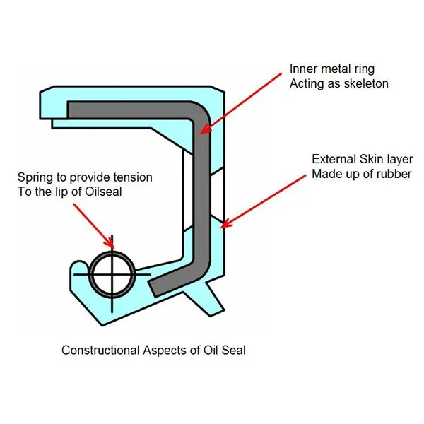
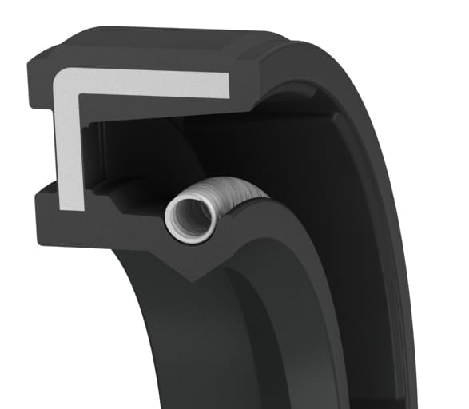
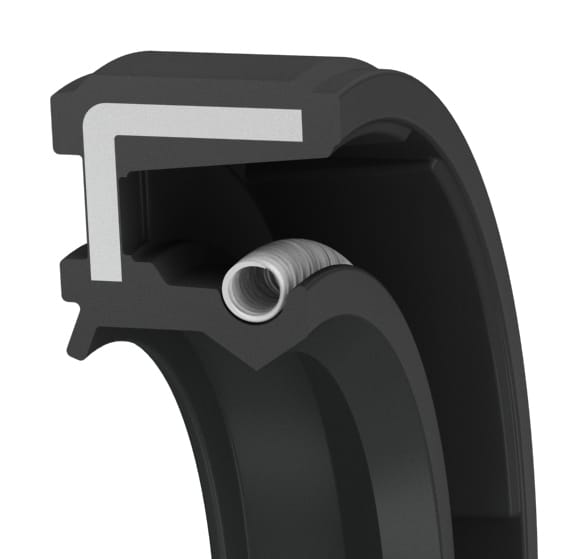
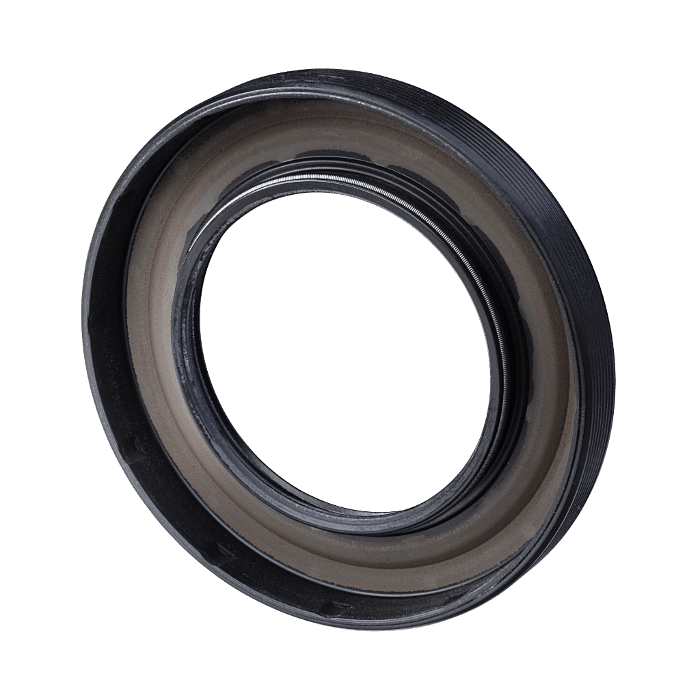
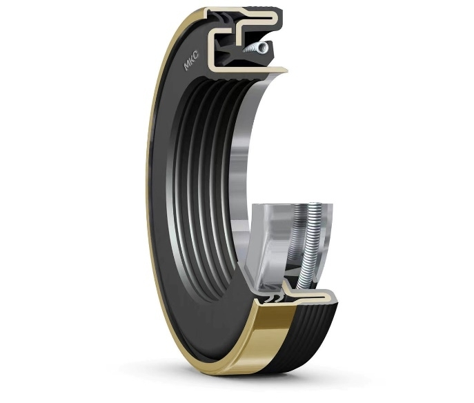
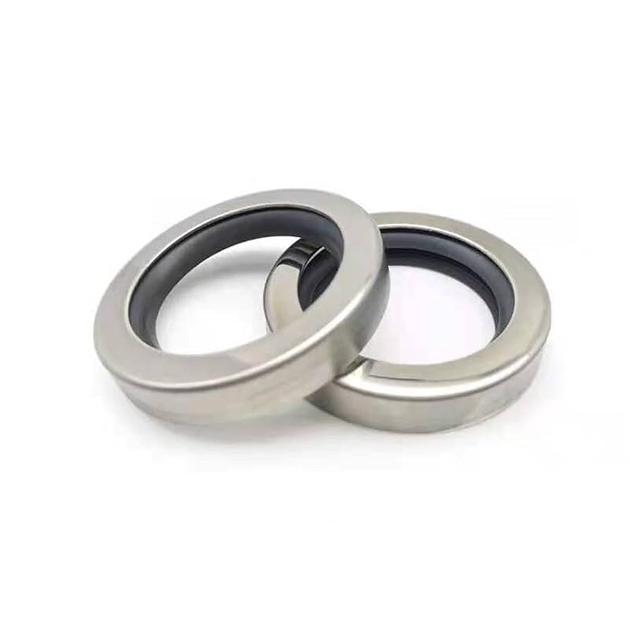

Oil seals—also known as shaft seals, radial lip seals, or rotary shaft seals—are critical components designed to retain lubricants and exclude contaminants in machinery. They ensure the smooth operation of rotating and reciprocating shafts by preventing the leakage of oil or grease while keeping dust, dirt, and moisture out.
Working Principle
Oil seals work by using a flexible rubber lip that maintains constant contact with a rotating shaft. This lip is usually supported by a garter spring that helps apply even pressure around the shaft. The inner lip retains the lubricant while the outer lip (in double-lip seals) keeps out dust and contaminants. A carefully engineered interface between the sealing lip and shaft surface ensures minimum leakage under different operating pressures and temperatures.
Functions of Oil Seals:
Prevent lubricant leakage from bearings and gearboxes
Protect against contaminants such as dirt, water, and chemicals
Maintain proper lubrication to reduce friction and wear
Enhance equipment lifespan and performance

Standard Oil Seal

Cross Section Diagram
Applications:
Automotive (engines, transmissions, axles)
Industrial machinery (gearboxes, pumps, motors)
Agriculture & construction equipment
Marine & aerospace systems
Household appliances
Types of Oil Seals:
Single Lip: Basic design for lubricant retention
Double Lip: Includes dust lip for additional environmental protection
Spring-Loaded Seals: Use garter springs to maintain lip tension
Cassette Seals: Multi-lip, pre-assembled units for harsh, abrasive conditions
PTFE Seals: Low friction, chemically resistant, ideal for dry runs and high RPM

Single lip seals

Double lip seals

Spring-loaded seals

Cassette seals

PTFE seals
Materials Used:
Nitrile Rubber (NBR): Standard choice, good resistance to oils and fuels
Fluoroelastomer (Viton®): High heat and chemical resistance
Silicone: Excellent flexibility in extreme temperatures
Polyacrylate: Used in high-speed automotive applications
PTFE: Low friction, chemical-resistant
Selection Factors
Choosing the right oil seal depends on several variables:
Rotational speed and shaft diameter
System pressure and operating temperature
Type of fluid/lubricant being sealed
Environmental exposure to dust, water, or chemicals
Regular maintenance and correct seal selection significantly reduce failure risk.
Benefits of Using High-Quality Oil Seals
Reduced maintenance frequency and downtime
Enhanced protection for expensive machine components
Greater efficiency due to proper lubrication retention
Extended machine service life
Improved overall reliability of industrial operations
Conclusion
Oil seals may seem like small components, but their role is vital in almost every mechanical system. By choosing the right seal type, material, and design for your application, you ensure the long-term performance, reliability, and safety of your equipment. Whether in automotive, manufacturing, or heavy-duty industries, a well-selected oil seal is a key factor in mechanical success.